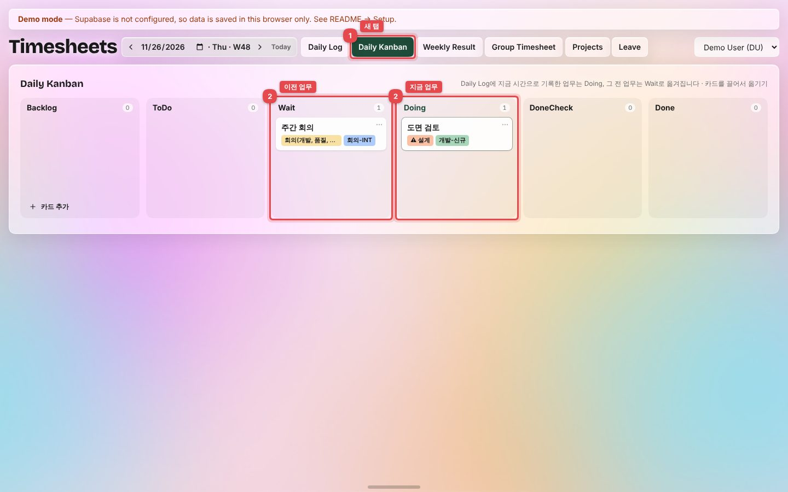
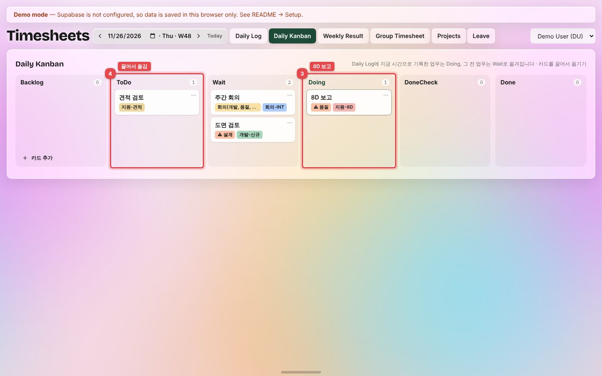
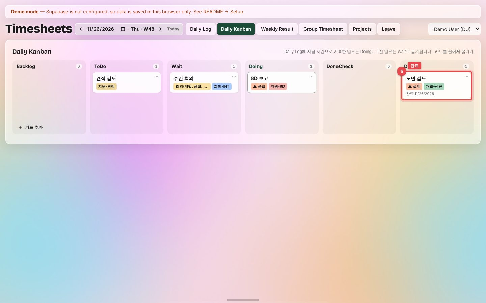
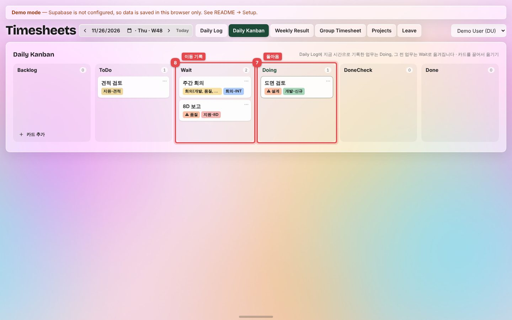

검증 보고서 · E2E
Daily Log 옆에 Daily Kanban. Backlog · ToDo · Wait · Doing · DoneCheck · Done. Doing은 Daily Log에서 지금 하는 업무가 기록되면, 이전 업무도 자연스럽게 칸반에. 완료까지 표시. (이동 여정 분석은 나중에, 기록은 지금부터)
| # | 테스트 케이스 | 기대 결과 | 실제 결과 | 판정 근거 (Assertion) | 결과 | 증적 |
|---|---|---|---|---|---|---|
| 1 | Daily Log 다음 탭에 Daily Kanban, 칸 6개 | Daily Log → Daily Kanban 순서, backlog·todo·wait·doing·donecheck·done | 순서 맞음, backlog·todo·wait·doing·donecheck·done | 탭 순서 && data-column 6개 | PASS | 화면 1 |
| 2 | 기록한 업무마다 카드, 지금(09:30 칸)의 업무가 Doing, 앞의 업무는 Wait | Doing '도면 검토', Wait '주간 회의' | Doing '도면 검토', Wait '주간 회의' | doing === ['도면 검토'] && wait === ['주간 회의'] | PASS | 화면 1 |
| 3 | 다음 칸(10:00)을 기록하면 그 업무가 Doing, 도면 검토는 Wait로 | Doing '8D 보고', Wait '주간 회의, 도면 검토' | Doing '8D 보고', Wait '주간 회의, 도면 검토' | doing === ['8D 보고'] && wait === ['주간 회의','도면 검토'] | PASS | 화면 2 |
| 4 | Backlog에 카드 추가, 끌어서 ToDo로 | 추가 후 Backlog '견적 검토' → ToDo로 이동 | 추가 후 Backlog '견적 검토', 끈 뒤 ToDo '견적 검토', Backlog '' | backlog 에 추가 → todo === ['견적 검토'] && backlog 비어 있음 | PASS | 화면 2 |
| 5 | … 메뉴로 DoneCheck → Done, 완료 날짜 표시 | DoneCheck를 거쳐 Done에 '도면 검토', '완료 …' 표시 | DoneCheck '도면 검토' → Done 카드 '도면 검토 ⚠ 설계 개발-신규 완료 11/26/2026' | donecheck 에 있다가 done 에 있고 '완료' 글자 | PASS | 화면 3 |
| 6 | 새로 고쳐도 보드 그대로 | Done '도면 검토', ToDo '견적 검토', Doing '8D 보고' | Done '도면 검토', ToDo '견적 검토', Doing '8D 보고' | 새로 고침 후 같은 칸 | PASS | — |
| 7 | 끝난 업무를 다시 기록하면 Doing으로 돌아옴 | 10:30 칸에 '도면 검토' → Doing, '8D 보고' → Wait | Doing '도면 검토', Wait '주간 회의, 8D 보고', Done '' | doing === ['도면 검토'] && wait 에 '8D 보고' && done 비어 있음 | PASS | 화면 4 |
| 8 | 칸 이동이 모두 기록됨(여정) | doing(log) → wait(log) → donecheck(manual) → done(manual) → doing(log) | doing(log) → wait(log) → donecheck(manual) → done(manual) → doing(log) | kanban_moves 의 to_status(reason) 순서 | PASS | 화면 4 |
| 9 | 휴대폰: 칸은 보드 안에서 옆으로 넘어가고 페이지는 넘치지 않음 | 페이지 폭 ≤ 390, 보드 내용 > 390(옆으로 스크롤) | 페이지 390px, 보드 내용 1380px | documentElement.scrollWidth ≤ 390 && board.scrollWidth > 390 | PASS | — |
| 10 | 페이지 오류 없음 | 0건 | 0건 | pageerror 수 === 0 | PASS | — |
빨간 테두리와 번호는 표의 테스트 케이스 번호입니다. 그 요소를 확인해 판정했습니다.



